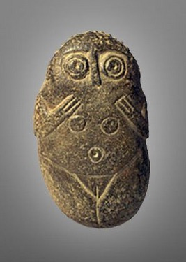
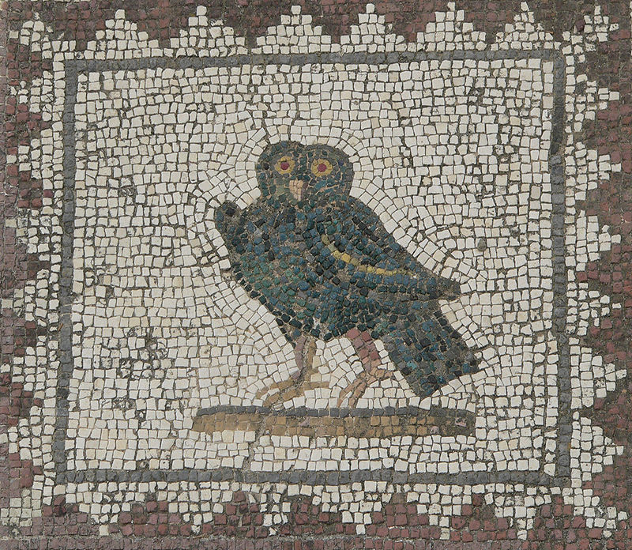
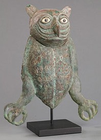
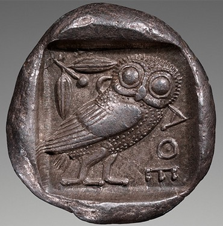
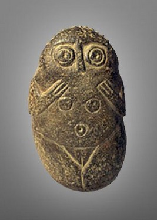
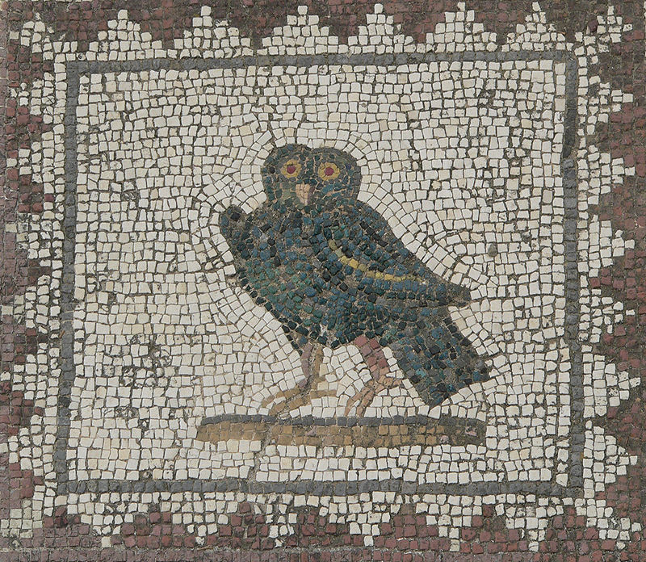
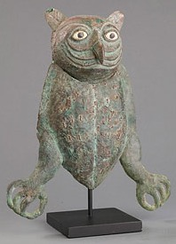
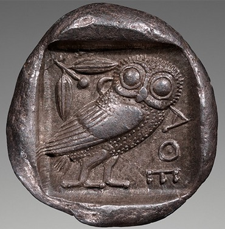

Sexual dimorphism is a physical difference between males and females of a species. Reverse sexual dimorphism, when females are larger than males, has been observed across multiple owl species.[9] The degree of size dimorphism varies across multiple populations and species, and is measured through various traits, such as wing span and body mass.[9] Overall, female owls tend to be slightly larger than males. The exact explanation for this development in owls is unknown. However, several theories explain the development of sexual dimorphism in owls.
One theory suggests that selection has led males to be smaller because it allows them to be efficient foragers. The ability to obtain more food is advantageous during breeding season. In some species, female owls stay at their nest with their eggs while it is the responsibility of the male to bring back food to the nest.[10] However, if food is scarce, the male first feeds himself before feeding the female.[11] Small birds, which are agile, are an important source of food for owls. Male burrowing owls have been observed to have longer wing chords than females, despite being smaller than females.[11] Furthermore, owls have been observed to be roughly the same size as their prey.[11] This has also been observed in other predatory birds,[10] which suggests that owls with smaller bodies and long wing chords have been selected for because of the increased agility and speed that allows them to catch their prey.
Another popular theory suggests that females have not been selected to be smaller like male owls because of their sexual roles. In many species, female owls may not leave the nest. Therefore, females may have a larger mass to allow them to go for a longer period of time without starving. For example, one hypothesized sexual role is that larger females are more capable of dismembering prey and feeding it to their young, hence female owls are larger than their male counterparts.[9]
A different theory suggests that the size difference between male and females is due to sexual selection: since large females can choose their mate and may violently reject a male's sexual advances, smaller male owls that have the ability to escape unreceptive females are more likely to have been selected.[11]
For more information on Owls and their sexuality click here.